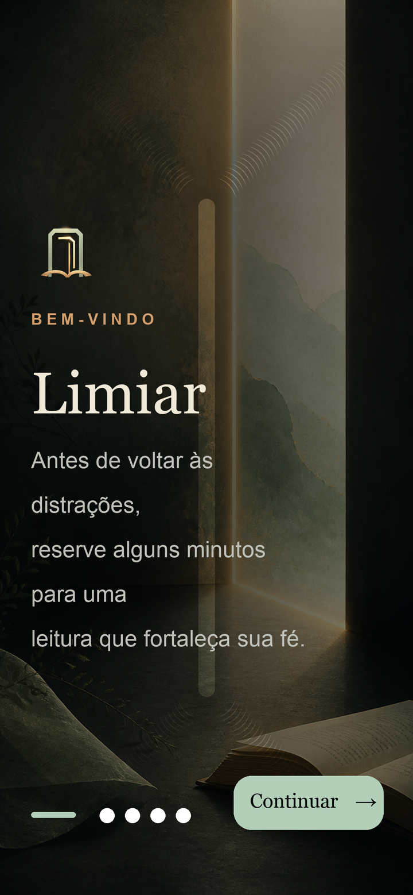

1
Escolha os apps que ativam o Limiar
Use o seletor nativo do Tempo de Uso para definir quais apps vão ativar essa pausa.
Foco com sentido
Antes de voltar às distrações, reserve alguns minutos para uma leitura que fortaleça sua fé.
Depois do teste gratuito, o Limiar Premium custa R$ 9,90/mês. Assinatura e cancelamento são feitos pela App Store.

Como funciona
Você escolhe os apps que ativam o Limiar. Quando for usá-los, o app propõe uma pausa curta com leitura espiritual antes de continuar.
Use o seletor nativo do Tempo de Uso para definir quais apps vão ativar essa pausa.
Receba três trechos religiosos com explicação espiritual personalizada, reflexão e narração na versão completa.
Depois da leitura, os apps selecionados ficam disponíveis por um período. Quando a pausa terminar, eles voltam a ativar o Limiar.
Leitura pessoal
O Limiar adapta os textos para a tradição escolhida e usa suas preferências de livros, temas e profundidade para gerar uma experiência mais próxima da sua fé.
Católica, evangélica, judaica ou espírita, com linguagem e prioridades ajustadas para cada caminho.
No teste gratuito e no Premium, as explicações e aplicações práticas são geradas de forma personalizada.
Quando quiser ouvir, toque no botão de áudio. A narração só acontece quando você pede.
Você define quais apps ativam a pausa e segue no controle do que quer atravessar.
Dúvidas comuns
Não. Você começa com 7 dias grátis. Depois disso, a assinatura mensal é necessária para usar a versão completa.
Diretamente no app, pela App Store. A Apple confirma preço, período de teste e renovação antes da assinatura.
Não. O Limiar oferece leituras e reflexões de apoio, sem substituir acompanhamento pastoral, rabínico, terapêutico ou profissional.
Não. Eles continuam visíveis. O Limiar apenas cria uma pausa antes dos apps que você escolheu.
Comece hoje
Baixe o Limiar no iPhone, escolha os apps que ativam a pausa e comece seu teste gratuito de 7 dias.
Se a página da App Store ainda não estiver pública, ela ficará disponível assim que a versão for liberada pela Apple.